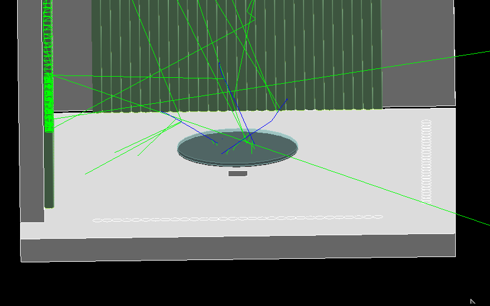
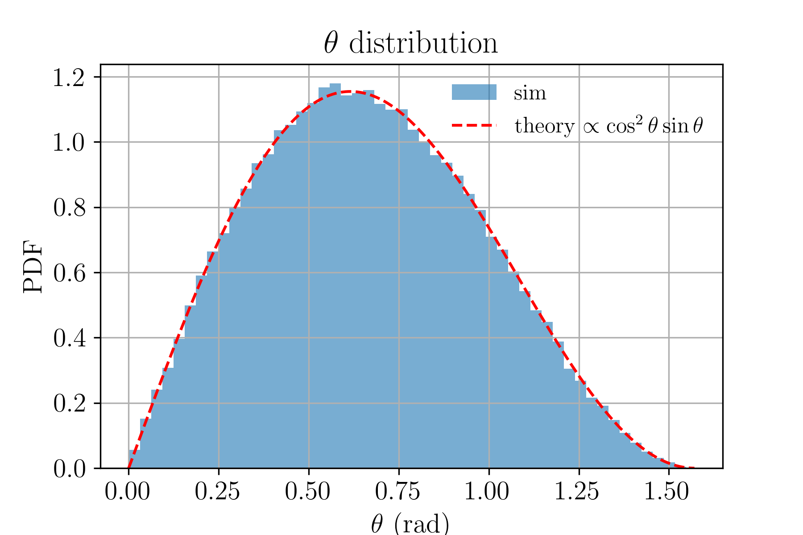
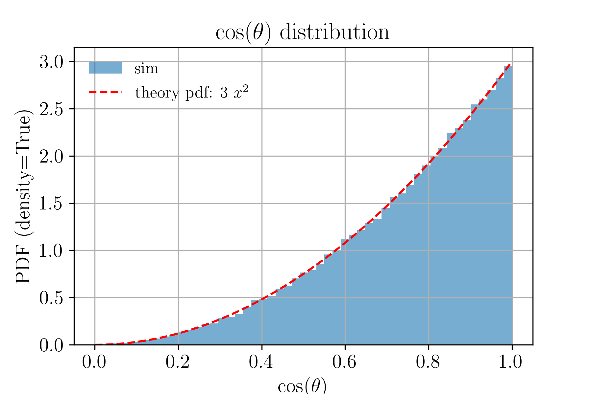
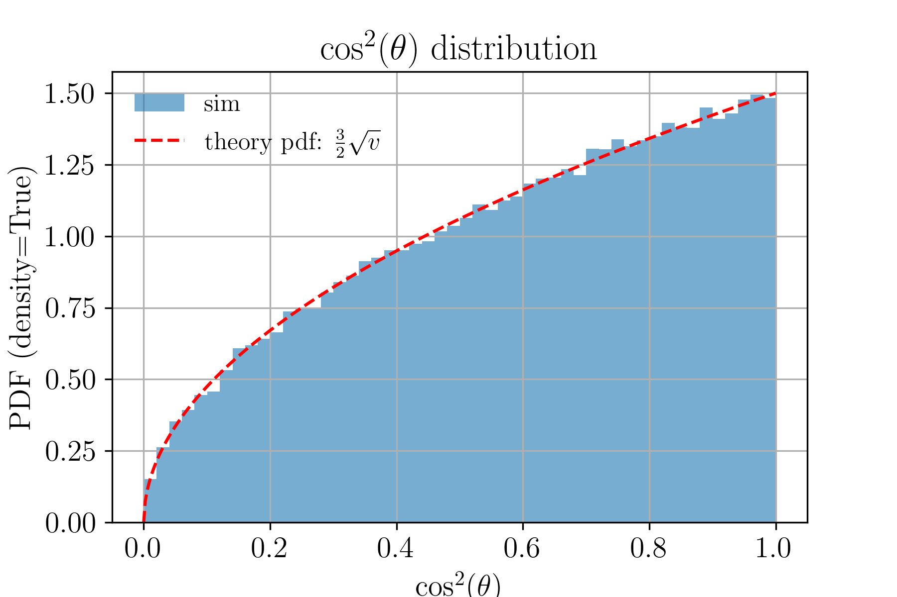
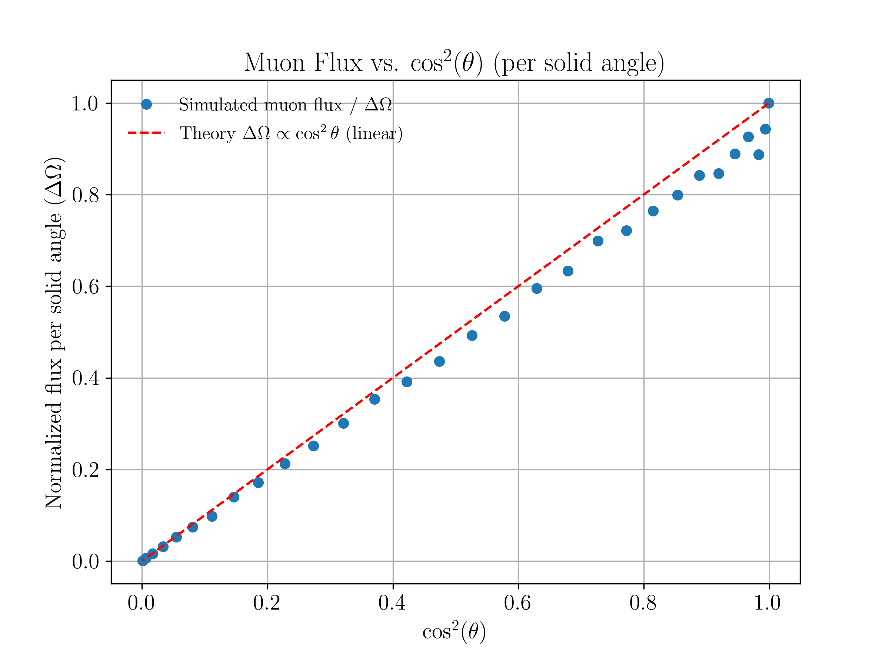
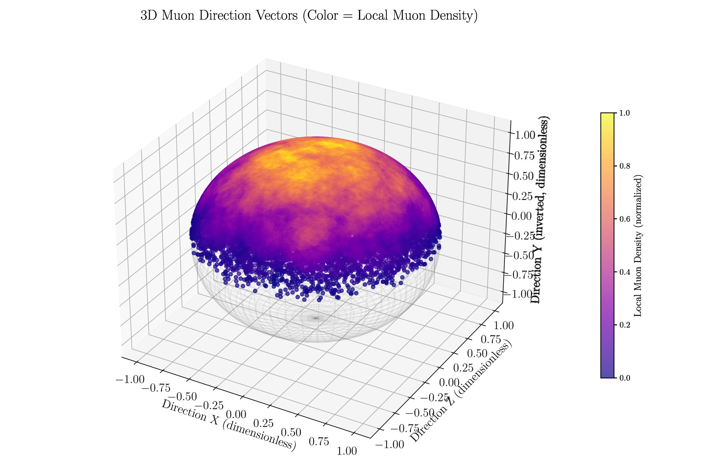
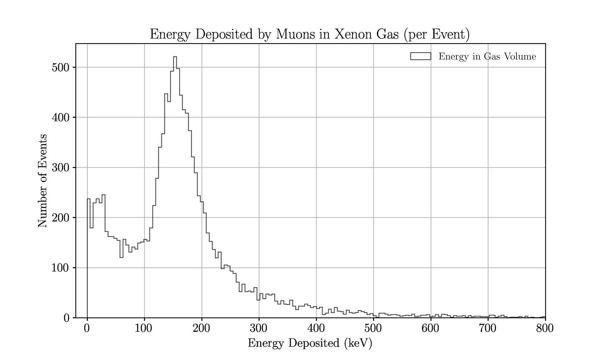
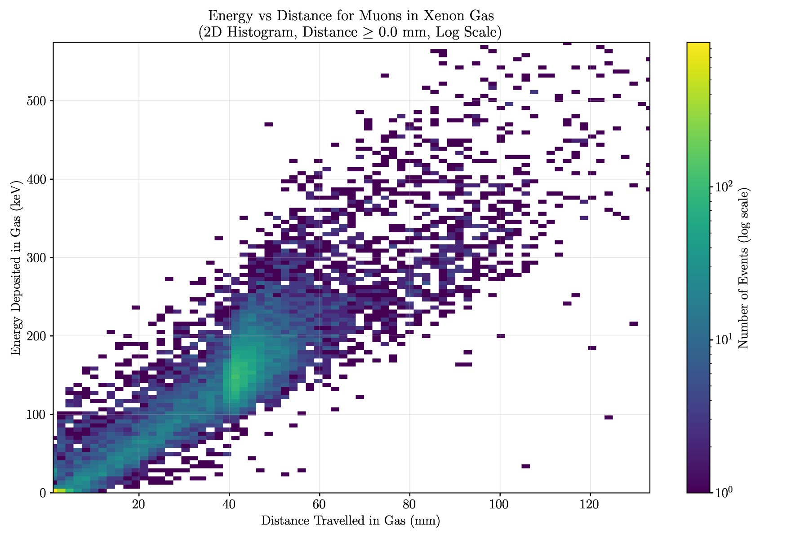
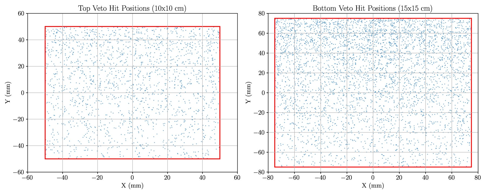

Geant4 simulations of CIGAR and HD-DEMO, from a realistic cosmic-muon generator to radioactive source studies.
What I Simulate
For CIGAR I built the Geant4 simulation, including several particle sources: a realistic muon generator, and tests with Am-241 and Na-22. For HD-DEMO I contribute to a simulation that is used to understand the detector geometry better. This is the latest thing I am working on.

Geant4 event display from the CIGAR simulation: an alpha particle producing photons in Xenon gas
Realistic Muon Generator
Cosmic muons arrive with a characteristic angular distribution. The generator samples directions so that the simulated distributions follow the expected theory curves (red dashed lines).

Zenith-angle θ distribution compared with theory ∝ cos²θ sinθ.

cos θ distribution compared with theory.

cos²θ distribution compared with theory.

Normalized muon flux per solid angle versus cos²θ.

3D muon direction vectors, coloured by local density.
Detector Response
Energy deposited by muons in the xenon gas and in the veto panels

Energy deposited by muons in the xenon gas, per event.

Energy deposited versus distance travelled in the gas (2D histogram, log scale).

Muon hit positions on the top and bottom veto panels.